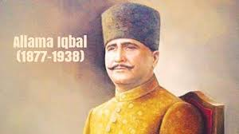

Allama Muhammad Iqbal

One of the best Poet in 20th Century
The Himalayas The Colorful Rose The Age of Infancy Mirza Ghalib The Cloud on the Mountain A Spider and a Fly A Mountain and a Squirrel A Cow and a Goat The Child's Invocation Sympathy A Mother's Dream The Bird's Complaint The Interrogation of the Dead The Candle And The Moth THE INTELLECT AND THE HEART The Painful Wail The Sun The Candle A Longing The Morning Sun Pathos Of Love THE WITHERED ROSE THE TOMB-STONE OF SAIYYID THE CRESCENT THE MESSAGE OF DAWN LOVE AND DEATH PIETY AND ECSTASY The Poet THE HEART The Ocean Wave Farewell O World's Ongregation The Suckling Baby The Portrait Of Anguish Lament Of Separation The Moon Hazrat BILAL ( رضي الله تعالى عنه ) The Story Of Man An Ode To India The Fire-Fly The Morning Star Venus The National Anthem For The... The New Temple Nawab Mirza Khan Dagh The Cloud A Bird And The Fire fly The Child And The Candle On The Bank Of The Ravi The Traveler's Request Do Not Look at the Garden of If You Had Not Come I Would O Lord! Strange is the piety Complaint (Shikwa)